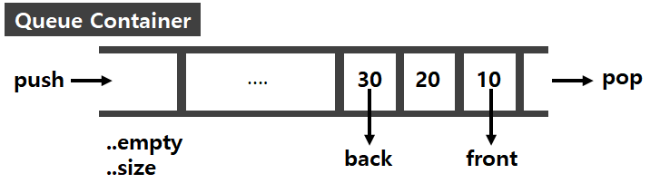

#1 Queue Container 구조 & 특징
#2 멤버함수
#3 사용방법
#4 관련예제
INFO
Queue [큐] 컨테이너는 C++ STL 표준 라이브러리가 제공하는 컨테이너 어댑터로 사용자가 따로 구현하지 않고 편리하게 사용할 수 있도록 하는 자료구조 입니다. Queue [큐] 자료구조의 특징과 구조에 대해서는 Computer Basic - DataStructure 카테고리에 정리해 두었으니, 혹시 큐에 대한 개념이 없다면 다음 게시글을 참고해 주세요. About Queue
#1 Queue Container 구조 & 특징
● FIFO[First in , First Out] 방식으로 동작합니다.
● deque, list 컨테이너에 붙여서 사용 가능한 컨테이너 어댑터입니다.
(vector 컨테이너와는 같이 사용 불가능합니다. 이유는 queue 컨테이너 어댑터를 사용하기 위해서는 앞에서 빼는 기능을 지니고 있어햐 하는데 벡터는 pop_front() 와 같은 멤버함수를 갖고 있지 않기 때문입니다.)
● deque 컨테이너를 기본적으로 사용합니다.

대표적인 멤버함수는 총 6가지로, 원소를 추가하는 push , 원소를 삭제하는 pop , 맨 앞의 원소를 참조하는 front , 가장 뒤의 원소를 참조하는 back , 원소의 개수를 반환하는 size , queue가 비어있는지 확인하는 empty 등이 있습니다.
#2 멤버함수
1. void push() - 원소를 추가합니다.
2. void pop() - 원소를 제거합니다.
3. value_type& back() - 가장 뒤의 원소에 접근합니다.
4. value_type& front() - 맨 앞의 원소에 접근합니다.
5. bool empty() const - 원소가 비어있는지 확인합니다. (비어있으면 true를 반환합니다.)
6. size_type size() const - 원소의 개수를 반환합니다.
#3 사용방법
- <queue> 헤더파일을 include 해야 합니다.
#include <queue>- 기본적인 생성자 형식은 queue <[data_type]> [value_name]; 입니다.
queue<int> q1; // int type queue
queue<string> q2; // string type queue- 다른 컨테이너와 같이 사용하고자 한다면 queue <[data_type], [Container Type]> [value_name]; 과 같이 선언합니다.
queue<int, list<int>> lq; // 컨테이너 형식으로 list<int>를 사용하며, int형 원소를 저장하는 queue
#4 관련예제
#include <iostream>
#include <queue>
using namespace std;
int main()
{
queue<int> q; // int type queue 선언
q.push(10); // '10' 추가
q.push(20); // '20' 추가
q.push(30); // '30' 추가
cout << "[Before Pop]" << endl;
cout << "size is " << q.size() << endl;
cout << "front is " << q.front() << endl;
cout << "back is " << q.back() << endl;
cout << "empty ? " << q.empty() << endl;
q.pop();
q.pop();
q.pop();
cout << "[After Pop]" << endl;
cout << "size is " << q.size() << endl;
cout << "empty ? " << q.empty() << endl;
return 0;
}
[Before Pop]
size is 3
front is 10
back is 30
empty ? 0
[After Pop]
size is 0
empty ? 1